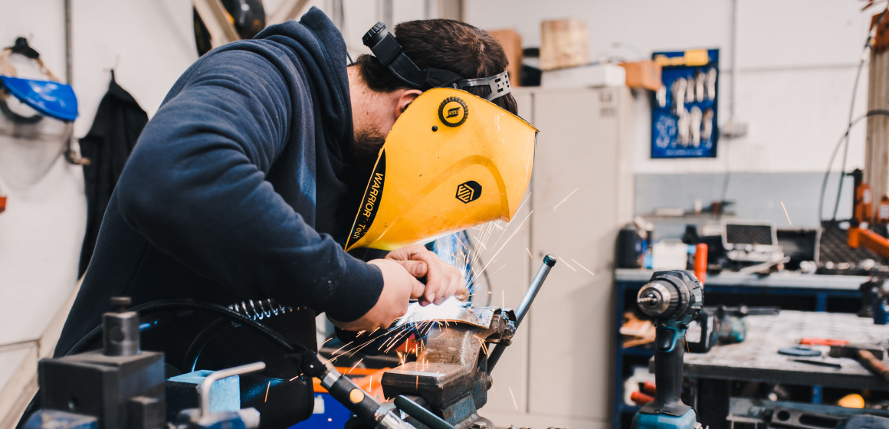
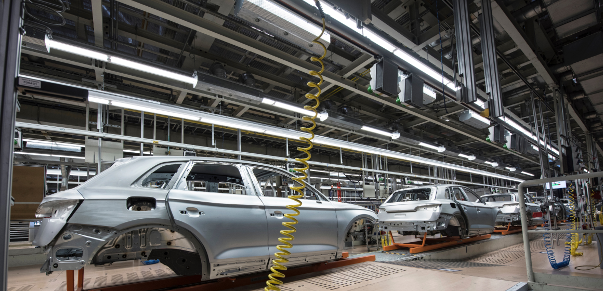

<div class="about">
    <div class="container">

        <div class="title-section">О предприятии</div>

        <div class="about__description">
            <span>
                За 20 лет развития в структуре завода сформирован мощный производственный потенциал, научно-технический центр, испытательная лаборатория, современная база, учебный центр и широкая сеть региональных и международных представительств в Российской Федерации, Республике Беларусь, Узбекистане и Казахстане.
            </span>
            <span>
                В номенклатуре выпускаемой НПП «ПИОНЕР» продукции найдется все, что необходимо для успешного решения задачи автоматизации технологических процессов на любом предприятии. Все средства измерения производства «ПИОНЕР» внесены в Государственный реестр СИ и имеют необходимые разрешительные документы.
            </span>
            <span>
                Ежегодно НПП «ПИОНЕР» реализует несколько проектов по модернизации серийных и разработке новых приборов, призванные в наибольшей степени удовлетворять возрастающие требования наших заказчиков.
            </span>
        </div>
        
        <div class="about__images">
            
            
        </div>

    </div>
</div>